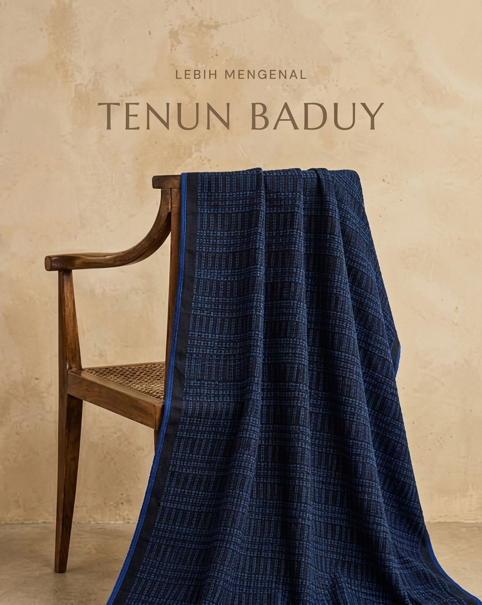

Kain Tenun Kanekes
Contoh halaman produk yang menempatkan cerita dan nilai budaya berdampingan dengan informasi produk.
Cerita produk
Tenun Baduy merupakan warisan budaya masyarakat Baduy di Banten
yang telah diwariskan secara turun-temurun selama ratusan tahun.
Keterampilan menenun dilakukan oleh perempuan Baduy sebagai bagian
dari kehidupan sehari-hari. menggunakan alat tenun sederhana dan
dikerjakan secara manual dengan penuh ketelitian. Tradisi ini
tidak hanya menghasilkan kain, tetapi juga menjadi bagian penting
dalam menjaga identitas dan hilai-nilai adat masyarakat Baduy.
Ciri khas Tenun Baduy terletak pada motifnya yang sederhana dan
warna-warna alami yang mencerminkan filosofi hidup masyarakat
Baduy: kesederhanaan, keharmonisan dengan alam, dan ketaatan
terhadap tradisi. Hingga kini, Tenun Baduy terus lestari dan
berkembang menjadi berbagai produk modern tanpa kehilangan makna
budaya yang terkandung di dalam setiap helainya.
Transaksi belum aktif. Tombol ini hanya mensimulasikan alur calon pengguna.